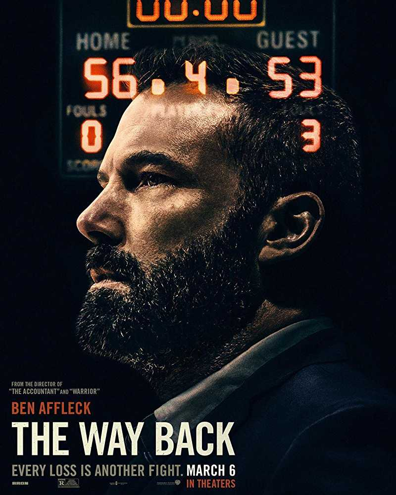

The Way Back (2020 film)
Language: English
Release Date: March 06,2020
Genre: Action,Crime
Duration: 1hr 48 minutes
 8/10
8/10 7.4/10
7.4/10 88%
88% 68/100
68/100
 2.5/5
2.5/5 2/5
2/5
 Book Now
Book Now Book Now
Book Now Book Now
Book Now
Get it Online
 Listen Now
Listen Now
Official Social Media Accounts
 Connect Now
Connect Now Connect Now
Connect Now Connect Now
Connect Now
Official Website
Similar Movie(s)
Description
Cast with Roles
Director(s): Gavin O'Connor
Jack Cunningham was a HS basketball phenom who walked away from the game, forfeiting his future. Years later, when he reluctantly accepts a coaching job at his alma mater, he may get one last shot at redemption.Source:IMDBPlot
Hot Updates
The Way Back stars a terrific Ben Affleck as a grieving alcoholic basketball coachBy:Vox - 07 March,2020
The Way Back Gets Lost in NihilismBy:National Review - 06 March,2020
'The Way Back' Review: On the ReboundBy:Wall Street Journal - 05 March,2020
Is The Way Back Based Off A True Story? Not QuiteBy:Screen Rant - 07 March,2020 The Way Back stars a terrific Ben Affleck as a grieving alcoholic basketball coachBy:Vox - 07 March,2020 The Way Back Gets Lost in NihilismBy:National Review - 06 March,2020 THE WAY BACK (2020) – ReviewBy:We Are Movie Geeks - 06 March,2020 'The Way Back' Review: On the ReboundBy:Wall Street Journal - 05 March,2020More Reviews and News



The Way Backr
Videos
Trailer #1
Trailer #2More Videos